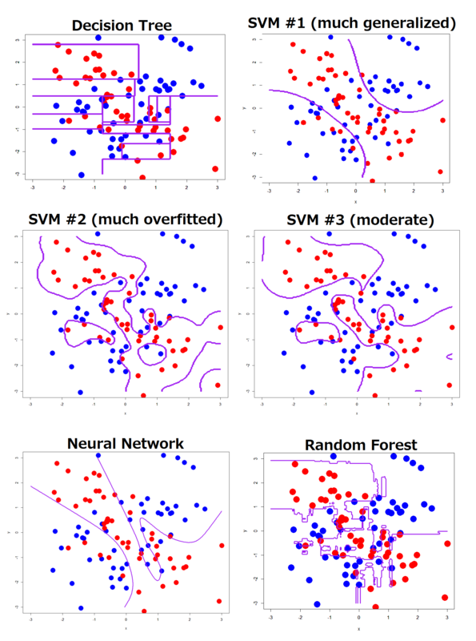

Decision Trees
Decision Boundary in Classification

Classification is a process of finding the decision boundary that best separate two classes
Decision Boundary in Classification
SVM = Support Vector Machine
Decision Tree
- Decision Tree for classification is Classification Tree
- Decision Tree for Regression is Regression Tree
Example of Classification Tree

[Link] (http://graphics8.nytimes.com/images/2008/04/16/us/0416-nat-subOBAMA.jpg)
Classification Tree
- In two dimension, classification Tree’s decision boundary is a collection of horiontal and vertical line
Data
- The tree starts by a vertical or horizontal line that best seperate the data
- Question: Find a vertical line that best seperate red and green.
A Possible Split
A Possible Split

A Possible Split
Question
- Question: Which is the best split?
Partial Answer
- It looks like Split 1 and 3 are better than Split 2 since it misclassifies less
- Which is the better split between Split 1 and Split 3?
- We need to find a way to measure how good a split is
Impurity Measure
- The impurity of a node (a node = a subset of the data or the original data) measure how uncertain the node is.
- For example, node A with 50% reds and 50% greens would be more uncertained than node B with 90% reds and 10% greens. Thus, node A has greater impurity than node B.
- More uncertained \(=\) Greater impurity
Impurity Measure
- A split that gains more impurity is the better split!
Impurity Gain
\[ IG = I_{parent} - \frac{N_{left}}{N}I_{left}-\frac{N_{right}}{N}I_{right} \]
- IG is Impurity Gain of the split
- \(N_{left}\) and \(N_{right}\) are the number of points in the left child node and right child node, respectively.
- \(N_{left}+N_{right}=N\)
Impurity Measure
- Impurity can be measured by: classification error, Gini Index, and Entropy.
Impurity Measure
- Let \(p_0\) and \(p_1\) be the proportion of class 0 and class 1 in a node.
$$
Calculation
- Let’s calculate the impurity gain of the three splits to decide which split is the best
IG By Classification Error
- Let green and red be class 0 and class 1, respectively.
For Split 1: \(N = 5, N_{left} =1, N_{right} = 4\)
Node parent, A: \(p_0 = \frac{2}{5}, p_1 = \frac{3}{5}\). Thus, \(I_{A} = \text{min}(\frac{2}{5}, \frac{3}{5}) = \frac{2}{5}\)
Node child left, L: \(p_0 = \frac{0}{1} = 0, p_1 = \frac{1}{1} = 1\). Thus, \(I_{L} = \text{min}(0, 1) = 0\)
Node child right, R: \(p_0 = \frac{3}{4}, p_1 = \frac{1}{4}\). Thus, \(I_{R} = \text{min}(\frac{3}{4}, \frac{1}{4}) = \frac{1}{4}\)
Impurity Gain of Split 1:
\[IG = \frac{2}{5} - \frac{1}{5} \cdot 0-\frac{4}{5} \cdot \frac{1}{4} = 0.2\]
IG By Classification Error
For Split 2: \(N = 5, N_{left} =2, N_{right} = 3\)
Node parent, A: \(p_0 = \frac{2}{5}, p_1 = \frac{3}{5}\). Thus, \(I_{A} = \text{min}(\frac{2}{5}, \frac{3}{5}) = \frac{2}{5}\)
Node child left, L: \(p_0 = \frac{1}{2}, p_1 = \frac{1}{2}\). Thus, \(I_{L} = \frac{1}{2}\)
Node child right, R: \(p_0 = \frac{2}{3}, p_1 = \frac{1}{3}\). Thus, \(I_{R} = \text{min}(\frac{2}{3}, \frac{1}{3}) = \frac{1}{3}\)
Impurity Gain of Split 2:
\[IG = \frac{2}{5} - \frac{2}{5} \cdot \frac{1}{2}-\frac{3}{5} \cdot \frac{1}{3} = 0\]
IG By Classification Error
For Split 3: \(N = 5, N_{left} =3, N_{right} = 2\)
Node parent, A: \(p_0 = \frac{2}{5}, p_1 = \frac{3}{5}\). Thus, \(I_{A} = \text{min}(\frac{2}{5}, \frac{3}{5}) = \frac{2}{5}\)
Node child left, L: \(p_0 = \frac{1}{3}, p_1 = \frac{2}{3}\). Thus, \(I_{A} = \text{min}(\frac{1}{3}, \frac{2}{3}) = \frac{1}{3}\)
Node child right, R: \(p_0 = \frac{2}{2}, p_1 = \frac{0}{2}\). Thus, \(I_{R} = \text{min}(1,0) = 0\)
Impurity Gain of Split 3:
\[IG = \frac{2}{5} - \frac{3}{5} \cdot \frac{1}{3}-\frac{2}{5} \cdot 0 = 0.2\]
Comparing IG By Classification Error
| IG |
||–| | Split 1 | 0.2 | | Split 2 | 0 | | Split 3 | 0.2 |
- By classification error, Split 1 and Split 3 are tie as the best because they have the same impurity gain.
IG By Gini Index
For Split 1: \(N = 5, N_{left} =1, N_{right} = 4\)
Node parent, A: \(p_0 = \frac{2}{5}, p_1 = \frac{3}{5}\). Thus, \(I_{A} = 1 - (\frac{2}{5})^2-(\frac{3}{5})^2 = 0.48\)
Node child left, L: \(p_0 = \frac{0}{1} = 0, p_1 = \frac{1}{1} = 1\). Thus, \[I_{L} = 1 -0^2-1^2 = 0\]
Node child right, R: \(p_0 = \frac{3}{4}, p_1 = \frac{1}{4}\). Thus, \[I_{R} = 1-(\frac{3}{4})^2-(\frac{1}{4})^2 = 0.375\]
Impurity Gain of Split 1:
\[IG = 0.48 - \frac{1}{5} \cdot 0-\frac{4}{5} \cdot 0.375 = 0.18\]
IG By Gini Index
For Split 2: \(N = 5, N_{left} =2, N_{right} = 3\)
Node parent, A: \(p_0 = \frac{2}{5}, p_1 = \frac{3}{5}\). Thus, \(I_{A} = 1-(\frac{2}{5})^2- (\frac{3}{5})^2 = 0.48\)
Node child left, L: \(p_0 = \frac{1}{2}, p_1 = \frac{1}{2}\). Thus, \(I_{L} = 1- (\frac{1}{2})^2-(\frac{1}{2})^2=0.5\)
Node child right, R: \(p_0 = \frac{2}{3}, p_1 = \frac{1}{3}\). Thus, \(I_{R} = 1-(\frac{2}{3})^2 -(\frac{1}{3})^2 = 0.44\)
Impurity Gain of Split 2:
\[IG = 0.48 - \frac{2}{5} \cdot \frac{1}{2}-\frac{3}{5} \cdot 0.44 = 0.016\]
IG By Gini Index
For Split 3: \(N = 5, N_{left} =3, N_{right} = 2\)
Node parent, A: \(I_{A} = 0.48\)
Node child left, L: \(p_0 = \frac{1}{3}, p_1 = \frac{2}{3}\). Thus, \(I_{A} = 1-(\frac{1}{3})^2 -(\frac{2}{3})^2 = 0.44\)
Node child right, R: \(p_0 = \frac{2}{2}, p_1 = \frac{0}{2}\). Thus, \(I_{R} = 1-0^2-1^2 = 0\)
Impurity Gain of Split 3:
\[IG = 0.48 - \frac{3}{5} \cdot 0.44 - \frac{2}{5} \cdot 0 = 0.216\]
Comparing IG By Gini Index
| IG |
||–| | Split 1 | 0.18 | | Split 2 | 0.016 | | Split 3 | 0.216 |
- By Gini Index, Split 3 is the best because it has the greatest impurity gain.
IG By Entropy
For Split 1: \(N = 5, N_{left} =1, N_{right} = 4\)
Node parent, A: \(p_0 = \frac{2}{5}, p_1 = \frac{3}{5}\). Thus, \(I_{A} = - log_2(\frac{2}{5})-log_2(\frac{3}{5}) = 0.971\)
Node child left, L: \(p_0 = \frac{0}{1} = 0, p_1 = \frac{1}{1} = 1\). Thus, \(I_{L} = 0\)
Node child right, R: \(p_0 = \frac{3}{4}, p_1 = \frac{1}{4}\). Thus, \[I_{R} = -log_2(\frac{3}{4})-log_2(\frac{1}{4}) = 0.811\]
Impurity Gain of Split 1:
\[IG = 0.971 - \frac{1}{5} \cdot 0-\frac{4}{5} \cdot 0.811 = 0.322\]
IG By Entropy
For Split 2: \(N = 5, N_{left} =2, N_{right} = 3\)
Node parent, A: \(p_0 = \frac{2}{5}, p_1 = \frac{3}{5}\). Thus, \(I_{A} = 0.971\)
Node child left, L: \(p_0 = \frac{1}{2}, p_1 = \frac{1}{2}\). Thus, \(I_{L} = - log_1(\frac{1}{2})-log_2(\frac{1}{2})=1\)
Node child right, R: \(p_0 = \frac{2}{3}, p_1 = \frac{1}{3}\). Thus, \(I_{R} = -log_2(\frac{2}{3}) -log_2(\frac{1}{3}) = 0.918\)
Impurity Gain of Split 2:
\[IG = 0.971 - \frac{2}{5} \cdot 1-\frac{3}{5} \cdot 0.918 = 0.02\]
IG By Entropy
For Split 3: \(N = 5, N_{left} =3, N_{right} = 2\)
Node parent, A: \(I_{A} = 0.971\)
Node child left, L: \(p_0 = \frac{1}{3}, p_1 = \frac{2}{3}\). Thus, \(I_{A} = -log_2(\frac{1}{3}) -log_2(\frac{2}{3}) = 0.918\)
Node child right, R: \(p_0 = \frac{2}{2}, p_1 = \frac{0}{2}\). Thus, \(I_{R} = 0\)
Impurity Gain of Split 3:
\[IG = 0.971 - \frac{3}{5} \cdot 0.918 - \frac{2}{5} \cdot 0 = 0.42\]
Comparing IG By Entropy
| IG |
||–| | Split 1 | 0.322 | | Split 2 | 0.02 | | Split 3 | 0.42 |
- By Gini Index, Split 3 is the best because it has the greatest impurity gain.
Comparing Impurity Measures
- Relation between impurity and the class probabilities. All impurity measures are maximized at \(p_1 =1/2\) and minimized at \(p_1 = 0\) and \(p_1=1\).
Another Example
- Which split is better?
Decide the best split using Chi-Square test of Independence
- Besides impurity gain, one can use the Chi-square, \(\chi^2\), test of independence to decide the best split.
Review of Chi-Square test of Independence
- Let \(X\) and \(Y\) be two categorical variables.
- We want to test if \(X\) and \(Y\) are independent/associated
- \(H_0\): \(X\) and \(Y\) are independent
- \(H_{\alpha}:\) \(X\) and \(Y\) are dependent
- Test statistic:
\[\sum\frac{(e_i-o_i)^2}{e_i} \sim \chi^2 \text{ distribution with degree of freedom} (n-1)(m-1)\]
Review of Chi-Square test of Independence
- In our context, the greater the \(\chi^2\) value, the smaller the \(p-value\)
- The smaller the \(p-value\), the more dependent the two variables are. Thus the better the split is.
- Therefore, we look for the split with the greatest \(\chi^2\) value.
Applying to Our Example
- We will calculate the \(\chi^2\) values of the three splits.
- The best split is the split with the greatest \(\chi^2\) value.
Split 1
| Greens | Reds | |
|–|–||| | Left Branch | 0 (Cell 1) | 1 (Cell 2) | 1 | | Right Branch | 3 (Cell 3) | 1 (Cell 4) | 4 | | | 3 | 2 | |
\[\chi^2 = \frac{(e_1-o_1)^2}{e_1}+\frac{(e_2-o_2)^2}{e_2}+\frac{(e_3-o_3)^2}{e_3}+\frac{(e_4-o_4)^2}{e_4}\]
\(i=1\) (Cell 1): \(e_1 = \frac{1\cdot 3}{5}\), \(o_1 = 0\)
\(i=2\) (Cell 2): \(e_2 = \frac{1\cdot 2}{5}\), \(o_2 = 1\)
\(i=3\) (Cell 3): \(e_3 = \frac{3\cdot 4}{5}\), \(o_3 = 3\)
\(i=4\) (Cell 4): \(e_4 = \frac{2\cdot 4}{5}\), \(o_4 = 1\)
Plug in, we have: \[\chi^2 = 1.875\]
Split 2
| Greens | Reds | |
|–|–||| | Left Branch | 1 (Cell 1) | 1 (Cell 2) | 2 | | Right Branch | 2 (Cell 3) | 1 (Cell 4) | 3 | | | 3 | 2 | |
\[\chi^2 = \frac{(e_1-o_1)^2}{e_1}+\frac{(e_2-o_2)^2}{e_2}+\frac{(e_3-o_3)^2}{e_3}+\frac{(e_4-o_4)^2}{e_4}\]
\(i=1\) (Cell 1): \(e_1 = \frac{2\cdot 3}{5}\), \(o_1 = 1\)
\(i=2\) (Cell 2): \(e_2 = \frac{2\cdot 2}{5}\), \(o_2 = 1\)
\(i=3\) (Cell 3): \(e_3 = \frac{3\cdot 3}{5}\), \(o_3 = 2\)
\(i=4\) (Cell 4): \(e_4 = \frac{3\cdot 2}{5}\), \(o_4 = 1\)
Plug in, we have: \[\chi^2 = 0.139\]
Split 3
| Greens | Reds | |
|–|–||| | Left Branch | 1 (Cell 1) | 2 (Cell 2) | 3 | | Right Branch | 2 (Cell 3) | 0 (Cell 4) | 2 | | | 3 | 2 | |
\[\chi^2 = \frac{(e_1-o_1)^2}{e_1}+\frac{(e_2-o_2)^2}{e_2}+\frac{(e_3-o_3)^2}{e_3}+\frac{(e_4-o_4)^2}{e_4}\]
(Cell 1): \(e_1 = \frac{2\cdot 3}{5}\), \(o_1 = 1\)
(Cell 2): \(e_2 = \frac{2\cdot 2}{5}\), \(o_2 = 2\)
(Cell 3): \(e_3 = \frac{3\cdot 3}{5}\), \(o_3 = 2\)
(Cell 4): \(e_4 = \frac{3\cdot 2}{5}\), \(o_4 = 0\)
Plug in, we have: \[\chi^2 = 2.222\]
Comparing the three splits
| \(\chi^2\) |
||–| | Split 1 | 1.875 | | Split 2 | 0.139 | | Split 3 | 2.222 |
- Split 3 is the best because it has the greatest \(\chi^2\)!
Logworth
- The quality of the split can be measured by Logworth
- Formula: \[logworth = -log(p\text{_}value)\]
- The greater the logworth, the better the split
Logworth
| \(\chi^2\) |p-value|logworth|
||–|–|–| | Split 1 | 1.875 |0.114|0.943| | Split 2 | 0.139 |0.998|0.0008 | Split 3 | 2.222 | 0.088 | 1.055|
Greatest \(\chi^2\) = Lowest \(p-value\) = Greatest logworth = Best Split
Split 3 is the best split!
What happens after the first split?
- After the first split, the data are divided into to subsets.
- The splitting process is repeated for each subset.
- The process ends when a stopping criteria is satisfied
Stopping Criteria
- Minimum Leaf Size: The minimum of observations in the leaves
- Maximum Number of Leaves
- Maximum Depth
- Others
Stopping Criteria
Decision Tree Algorithm - How to grow a tree
- Step 1: Calculate the impurity gain or \(p-value\) of all possible splits at all variables
- Step 2: Select the split that give the maximum impurity gain or lowest \(p-value\) to split the data into two subdata \(D_1\) and \(D_2\)
- Repeat Step 1 and Step 2 to both \(D_1\) and \(D_2\).
- Until a stopping criteria is satisfied
Complexity of Decision Tree
- A complexity of a tree can be measured by the number of leaves the tree has
- The more leaves a tree has, the more complex the tree is.
- A complex tree may be overfitted, i.e. having low training error but high testing error.
Prunning a tree
- For any given data, one can construct a tree that achives 0 misclassification on training data
- After growing the tree one needs to prune it to avoid overfittted
Prunning a tree
- The tree with maximum number of leaves is called the maximal tree (still satisfied the stopping rule)
- From the maximal tree, leaves are cut down, one by one, to obatined all possible subtrees
- The subtree with lowest error on validation data, is the optimal tree
Maximal vs Optimal Tree
Example of Tree Prunning
Example of Tree Prunning
- All the subtrees A, B, C, D, and E will be validated with the validation data to find the optimal tree - The optimal tree could be the maximal tree!
Question
- What if both B and C give the lowest error on the validation data? Which tree should be selected as the final model?